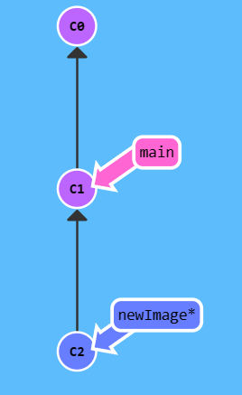
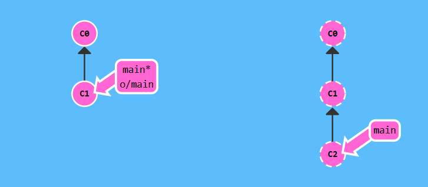

git学习
git核心概念
版本控制
版本控制是一种记录文件内容变化，以便查阅特定版本修订情况的系统。
作用：方便回溯版本。
本地版本控制系统
在本地利用数据库存储文件历次版本之间的差异。

集中化版本控制系统
集中化的版本控制系统都有一个单一的集中管理的服务器，保存所有文件的修订版本，而协同工作的人们都通过客户端连到这台服务器，取出最新的文件或者提交更新。

会出现的问题：
- 单点故障：中央服务器宕机，则其他人无法使用；如果中心数据库磁盘损坏又没有进行备份，你将丢失所有数据。
- 断网：必须联网才能工作： 受网络状况、带宽影响
分布式版本控制系统
（Distributed Version Control System，简称 DVCS），git属于这个。
特点：客户端不只提取最新版本的文件快照，而是把整个代码仓库复制下来
优势：
- 不用联网：每个人的电脑上都是完整的版本库，当你修改了某个文件后，你只需要将自己的修改推送给别人就可以了
- 中央服务器：方便交换大家的修改。
git
Linux 内核项目组当时使用分布式版本控制系统 BitKeeper 来管理和维护代码。但是，后来开发 BitKeeper 的商业公司同 Linux 内核开源社区的合作关系结束，他们收回了 Linux 内核社区免费使用 BitKeeper 的权力。 Linux 开源社区（特别是 Linux 的缔造者 Linus Torvalds）基于使用 BitKeeper 时的经验教训，开发出自己的版本系统，而且对新的版本控制系统做了很多改进。
与其它版本管理工具的区别
大部分版本管理工具都是基于差异比较来对待数据，以文件变更列表的形式存储信息。

原理：每提交一个修改，记录增量以△标记。
如何得到最终版本：遍历链表把全部增量添加到初始文件中。
缺陷：遍历链表耗时。
git采用快照流的形式，对待每一版本数据：
每次你提交更新，或在 Git 中保存项目状态时，它主要对当时的全部文件制作一个快照并保存这个快照的索引。

- Version 2：FileA和C更改，B没更改，但是也会把B快照记录下来。
git的状态及工作区
- 已提交（committed）：数据已经安全的保存在本地数据库中。
- 已修改（modified）：已修改表示修改了文件，但还没保存到数据库中。
- 已暂存（staged）：表示对一个已修改文件的当前版本做了标记，使之包含在下次提交的快照中。
工作区：
Git 仓库(.git directory)、工作目录(Working Directory) 以及 暂存区域(Staging Area) 。

工作流程：
- 在工作目录修改文件
- 将文件的快照暂存到暂存区域
- 提交更新，提交到git仓库
git使用
基础命令
获取git仓库
现有目录初始化仓库：进入某一项目目录，输入git init，该命令将创建一个名为
.git 的子目录。
从服务器克隆一个现有的git仓库：git clone
定义本地仓库的名字: git clone [url] directoryname
记录每次更新到仓库
- 检测当前文件状态 :
git status - 提出更改（把它们添加到暂存区）：
git add filename(针对特定文件)、git add *(所有文件)、git add *.txt（支持通配符，所有 .txt 文件） - 忽略文件：
.gitignore文件 - 提交更新:
git commit -m "代码提交信息"（每次准备提交前，先用git status看下，是不是都已暂存起来了， 然后再运行提交命令git commit） - 跳过使用暂存区域更新的方式 :
git commit -a -m "代码提交信息"。git commit加上-a选项，Git 就会自动把所有已经跟踪过的文件暂存起来一并提交，从而跳过git add步骤。 - 移除文件：
git rm filename（从暂存区域移除，然后提交。） - 对文件重命名：
git mv README.md README(这个命令相当于mv README.md README、git rm README.md、git add README这三条命令的集合)
Git Commit
Git 仓库中的提交记录保存的是你的目录下所有文件的快照，就像是把整个目录复制，然后再粘贴一样。
Git 希望提交记录尽可能地轻量，因此在你每次进行提交时，它并不会盲目地复制整个目录。条件允许的情况下，它会将当前版本与仓库中的上一个版本进行对比，并把所有的差异打包到一起作为一个提交记录。
提交结点链表：
每一次git commit，都会创建一个cx结点，结点的parent指针指向上次提交的结点。
推送改到远程仓库
- 如果你还没有克隆现有仓库，并欲将你的仓库连接到某个远程服务器，你可以使用如下命令添加：
git remote add origin <server>- 比如我们要让本地的一个仓库和 GitHub
上创建的一个仓库关联可以这样
git remote add origin https://github.com/Snailclimb/test.git
- 比如我们要让本地的一个仓库和 GitHub
上创建的一个仓库关联可以这样
- 将这些改动提交到远端仓库：
git push origin master(可以把 master 换成你想要推送的任何分支)
远程仓库的移除、重命名
- 将 test 重命名为
test1：
git remote rename test test1 - 移除远程仓库 test1:
git remote rm test1
查看提交历史
列出所有更新：git log
查看某个人的：git log --author=bob
撤销操作
重新提交：
1 | git commit --amend |
取消暂存的文件
1 | git reset filename |
撤消对文件的修改:
1 | git checkout --filename |
假如你想丢弃你在本地的所有改动与提交，可以到服务器上获取最新的版本历史，并将你本地主分支指向它：
1 | git fetch origin |
分支操作
在创建仓库的时候，master 是“默认”的分支。在其他分支上进行开发，完成后再将它们合并到主分支上。我们通常在开发新功能、修复一个紧急 bug 等等时候会选择创建分支。单分支开发好还是多分支开发好，还是要看具体场景来说。
建议：多用分支、早用分支
操作演示：
- 初始状态：
两次提交，主分支指向最新的提交
- 创建一个名字叫做 newImage 的分支
1 | git branch newImage |

- 新建的分支都会指向主节点在指向的提交。
不切换分支提交一份代码
- 因为本次提交是在主分支的提交，所以仅有main指向最新的提交C2、
切换分支再提交
1
2
3git checkout newImage;
git commit;
注意：在 Git 2.23 版本中，引入了一个名为 git switch
的新命令，最终会取代 git checkout，因为
checkout
作为单个命令有点超载（它承载了很多独立的功能）。
把新建的分支删掉
1 | git branch -d feature_x |
将分支推送到远端仓库（推送成功后其他人可见）：
1 | git push origin |
分支合并
git merge
- 在 Git 中合并两个分支时会产生一个特殊的提交记录，它有两个 parent 节点。翻译成自然语言相当于：“我要把这两个 parent 节点本身及它们所有的祖先都包含进来。”
初始化
合并bugFix到main
当前所在分支：main
1
git merge bugFix
- C2和C3合并成C4，然后main指向C4
main现在指向了一个拥有两个 parent 节点的提交记录。假如从main开始沿着箭头向上看，在到达起点的路上会经过所有的提交记录。这意味着main包含了对代码库的所有修改。
再把main合并到bugFix
1
2
3
4//合并到哪，切换分支到哪
git checkout bugFix;
//把main合并过来
git merge main
- 因为main继承bugFix，把
bugFix移动到main所指向的那个提交记录即可。
git rebase
概念：Rebase 实际上就是取出一系列的提交记录，“复制”它们，然后在另外一个地方逐个的放下去。
优势：可以创造更线性的提交历史。如果只允许使用 Rebase 的话，代码库的提交历史将会变得异常清晰。
语法：
git rebase A B：把分支B移到A上。
git rebase A：把A移到HEAD所在地方
rebase可以理解为：改变基地到...
案例：
初始化：
目标：把 bugFix 分支里的工作直接移到 main 分支上。移动以后会使得两个分支的功能看起来像是按顺序开发，但实际上它们是并行开发的。
合并到main
当前所在分支：bugFix
1
git rebase main
- 现在 bugFix 分支上的工作在 main 的最顶端，同时我们也得到了一个更线性的提交序列。
- 提交记录 C3 依然存在（树上那个半透明的节点），而 C3' 是我们 Rebase 到 main 分支上的 C3 的副本。
切换分支到main，把main更新到bugFix上
1
2
3git checkout main
git rebase bugFix
高级特性
分离head
HEAD 是一个对当前所在分支的符号引用 —— 也就是指向你正在其基础上进行工作的提交记录。
head总是指向当前分支上最近一次提交记录，通常情况指向分支名。
案例：
从main分离出去：
初始化
开始分离
1
git checkout c1
相对引用——移动
为什么引入相对引用：通过哈希值指定提交记录不方便，还要git log查看一长串的字符。
使用：
- 使用
^向上移动 1 个提交记录^加在引用名称的后面，表示寻找这个提交记录的parent结点
- 使用
~<num>向上移动多个提交记录，如~3
案例1：向上移动一个提交记录
初始化
向上移动
1
git checkout main^
- 这里HEAD会自动分离
案例2：使用head作为相对引用的指针参照
初始化
分离head、向上移动一位
1
2
3git checkout c3
git checkout HEAD^
案例3：强制修改分支位置
初始化
移动分支
1
2//让main分支回退HEAD所在结点处三个版本
git branch -f main HEAD^3
撤销变更
方法：
- git reset：把分支回退几个提交记录
- git revert：向上移动分支，原来指向的提交记录就跟从来没有提交过一样。
案例1：reset实战
初始化：
执行命令：
1
git reset HEAD~1
案例2：revert实战
初始化：
执行命令：
1
git revert HEAD/C2
- 新提交记录
C2'相当于一个更改：用来撤销C2这个提交 ，因此C2' = C1
移动提交记录
整理提交记录
git cherry-pick <提交号>...：将一些提交(提交树上任何地方)复制到当前所在的位置（HEAD）下面
案例：将 side 分支上的工作复制到 main
分支
初始化
执行命令
1
git cherry-pick C2 C4
可以看到，把side分支上的C2、C4提交记录直接按命令输入顺序复制到main（当前head所在的分支上）上了。
交互式rebase
在清楚提交记录名称（C2、C4...）的情况下，使用cherry-pick可以，在未知情的情况下，利用交互式rebase：用带参数
--interactive 的 rebase 命令。
- 在命令后增加了这个选项, Git 会打开一个 UI 界面并列出将要被复制到目标分支的备选提交记录，它还会显示每个提交记录的哈希值和提交说明，提交说明有助于你理解这个提交进行了哪些更改。
- 可以缩写为
-i
UI界面操作：
- 调整提交记录的顺序（通过鼠标拖放来完成）
- 删除你不想要的提交（通过切换
pick的状态来完成，关闭就意味着你不想要这个提交记录） - 合并提交。 遗憾的是由于某种逻辑的原因，我们的课程不支持此功能，因此我不会详细介绍这个操作。简而言之，它允许你把多个提交记录合并成一个。
案例：
初始化
执行
1
git rebase -i HEAD~4
结果（自定义）
只提取一个提交记录
开发场景：我正在解决某个特别棘手的 Bug，为了便于调试而在代码中添加了一些调试命令并向控制台打印了一些信息。这些调试和打印语句都在它们各自的提交记录里。最后我终于找到了造成这个 Bug 的根本原因。最后就差把
bugFix分支里的工作合并回main分支了。你可以选择通过 fast-forward 快速合并到main分支上，但这样的话main分支就会包含我这些调试语句了。
更好的解决方法：
让 Git 复制解决问题的那一个提交记录就可以了，把那个提交记录合并到main就可以。命令如下：
git rebase -igit cherry-pick
提交的技巧
开发场景1：你之前在 newImage
分支上进行了一次提交，然后又基于它创建了 caption
分支，然后又提交了一次。此时你想对某个以前的提交记录进行一些小小的调整。比如设计师想修改一下
newImage
中图片的分辨率，尽管那个提交记录并不是最新的了。
使用git rebase -i步骤：
- 先用
git rebase -i将提交重新排序，然后把我们想要修改的提交记录挪到最前 - 然后用
git commit --amend来进行一些小修改 - 接着再用
git rebase -i来将他们调回原来的顺序 - 最后我们把 main 移到修改的最前端（用你自己喜欢的方法）
案例1：用 git rebase -i
初始化
git rebase -i调整

复制两次
移动main到caption
1
2git checkout main
git rebase C3''目标结果
案例2：使用git cherry-pick
初始化
复制C2、C3
1
2
3
4git checkout main
git cherry-pick C2
git checkout c1
git cherry-pick C2 C3移动main到head
1
git branch -f main HEAD
目标结果：
git tag
永远指向某个提交记录的标识，比如软件发布新的大版本，或者是修正一些重要的 Bug 或是增加了某些新特性。
是提交树上的一个锚点，标识了某个特定的位置。
语法：git tag 名称 提交
案例：
初始化
执行语法：
结果：
git Describe
Git
专门设计了一个命令用来描述离你最近的锚点（也就是标签），就是
git describe
git bisect：一个查找产生 Bug 的提交记录的指令
语法规则：
1 | git describe <ref> |
<ref>是任何能被 Git 识别成提交记录的引用，如果你没有指定的话，Git 会使用你目前所在的位置（HEAD）
输出结果：
1 | <tag>_<numCommits>_g<hash> |
tag表示的是离ref最近的标签numCommits是表示这个ref与tag相差有多少个提交记录hash表示的是你所给定的ref所表示的提交记录哈希值的前几位
案例：

git describe main 会输出：
1 | v1_2_gC2 |
git describe side 会输出：
1 | v2_1_gC4 |
多分支rebase
案例：
初始化
命令
简洁版
结果
选择parent提交记录
案例1：
执行代码1：
1 | git checkout main^ |
执行代码2：
1 | git checkout main^2 |
用 ^ 和 ~ 可以自由地在提交树中移动：

git checkout HEAD~;
git checkout HEAD^2;
git checkout HEAD~2;
以上三段代码缩减为：git checkout HEAD^22
分支提交分发
案例：
main 分支是比 one、two 和
three 要多几个提交。出于某种原因，我们需要把
main
分支上最近的几次提交做不同的调整后，分别添加到各个的分支上。
one 需要重新排序并删除 C5，two
仅需要重排排序，而 three 只需要提交一次。
初始化
执行代码
结果
git远程仓库
git clone
远程分支
git clone后，本地仓库多了一个名为 o/main
的分支, 这种类型的分支就叫远程分支。
远程分支反映了远程仓库(在你上次和它通信时)的状态。这会有助于你理解本地的工作与公共工作的差别 —— 这是你与别人分享工作成果前至关重要的一步.
- 远程分支有一个特别的属性，在你切换到远程分支时，自动进入分离 HEAD 状态。
o/的含义：
远程分支有一个命名规范 —— 它们的格式是:
<remote name>/<branch name>
o就代表远程分支名字标识：
- 大多数的开发人员会将它们主要的远程仓库命名为
origin，并不是o。这是因为当你用git clone某个仓库时，Git 已经帮你把远程仓库的名称设置为origin了
案例：
初始化：
main分支提交一次：
o/main分支提交一次：
结果：
git fetch
作用：从远程仓库中获取数据，并且远程分支也会更新并反映最新的远程仓库。
- 从远程仓库下载本地仓库中缺失的提交记录
- 更新远程分支指针(如
o/main) - 该命令不会改变本地仓库的任何东西
通过互联网（使用
http://或git://协议) 与远程仓库通信。
参数
抓取特定分支到本地远程分支：
1 | git fetch origin foo |
Git 会到远程仓库的 foo
分支上，然后获取所有本地不存在的提交，放到本地的 o/foo
上。
抓取特定分支到本地分支：
1 | git fetch origin <source>:<destination> |
source现在指的是远程仓库中的位置，如果不指定，会在本地创建一个分支destination<destination>才是要放置提交的本地仓库的位置。
案例
1、不带参数
初始化
左本地、右远程
使用命令 git fetch
C2、C3已被下载到本地仓库，远程分支o/main移动到最新提交记录
2、抓取远程特定分支的提交，但不更新本地分支
- 初始化
执行：
git fetch origin foo
3、抓取远程分支到本地分支，更新本地分支
初始化
执行命令：
fit fetch origin foo~1:bar
- 即使本地没有bar分支，git也会自动创建一个分支出来
git pull
先抓取更新再合并，是基本常用操作，相当于git fetch + git merge
合并为一个命令：git pull
参数
git pull origin foo 相当于：
1 | git fetch origin foo; git merge o/foo |
git pull origin bar~1:bugFix 相当于：
1 | git fetch origin bar~1:bugFix; git merge bugFix |
案例
1、不带参数
初始化
左本地、右远程
执行git pull
本地分支结果：
2、带有参数
初始化
执行命令：
git pull origin main:foo
- 它先在本地创建了一个叫
foo的分支，从远程仓库中的 main 分支中下载提交记录，并合并到foo，然后再 merge 到我们的当前所在的分支bar上。
git push
git push
负责将你的变更上传到指定的远程仓库，并在远程仓库上合并你的新提交记录。一旦
git push 完成,
你的朋友们就可以从这个远程仓库下载你分享的成果了。
注意 ——
git push不带任何参数时的行为与 Git 的一个名为push.default的配置有关。它的默认值取决于你正使用的 Git 的版本，但是在教程中我们使用的是upstream。 这没什么太大的影响，但是在你的项目中进行推送之前，最好检查一下这个配置。
参数
未指定参数时的行为： Git 是通过当前所在分支的属性来确定远程仓库以及要 push 的目的地的。
带有参数：git push <remote> <place>
- remote：远程仓库名
- place：告诉git提交记录来自本地的哪个分支，要推送到远程的哪个分支下。
如果要同时指定本地分支和远程其它分支，命令如下：
git push origin <source>:<destination>
- source：可以是任何git能识别的位置，如果没有source，那就会把本地和远程的destination分支一并删除
案例
1、普通提交
初始化
执行 git push
- 本地分支的C2被远程分支接收，远程分支的main分支移动到C2，同时本地的o/main远程分支也会移动到C2.
2、指定远程分支、本地起始位置提交
初始化
执行命令：
git push origin foo^:main
3、指定不存在的远程分支提交
初始化
执行命令：
git push origin main:newBranch
偏离的提交历史
情景描述
假设你周一克隆了一个仓库，然后开始研发某个新功能。到周五时，你新功能开发测试完毕，可以发布了。但是 ，你的同事这周写了一堆代码，还改了许多你的功能中使用的 API，这些变动会导致你新开发的功能变得不可用。但是他们已经将那些提交推送到远程仓库了，因此你的工作就变成了基于项目旧版的代码，与远程仓库最新的代码不匹配了。
这种情况下, git push 就不知道该如何操作了。如果你执行
git push，Git
应该让远程仓库回到星期一那天的状态吗？还是直接在新代码的基础上添加你的代码，亦或由于你的提交已经过时而直接忽略你的提交？
因为这情况（历史偏离）有许多的不确定性，Git 是不会允许你
push
变更的。实际上它会强制你先合并远程最新的代码，然后才能分享你的工作。
这种情况就无法push。
解决
1、在push之前rebase：
对上图执行：
git fetch
git rebase o/main
git push
命令简写：git pull --rebase git push ;
2、利用merge
对上图执行：
git fetch
git merge o/main
git push
锁定main——Pull Request
远程服务器拒绝：
如果你是在一个大的合作团队中工作, 很可能是main被锁定了, 需要一些Pull Request流程来合并修改。如果你直接提交(commit)到本地main, 然后试图推送(push)修改, 你将会收到这样类似的信息:
1 | ! [远程服务器拒绝] main -> main (TF402455: 不允许推送(push)这个分支; 你必须使用pull request来更新这个分支.) |
解决方案：
新建一个分支feature, 推送到远程服务器. 然后reset main分支和远程服务器保持一致, 否则下次你pull并且他人的提交和你冲突的时候就会有问题.
案例：
- 初始化
执行：
git reset --hard o/main
git checkout -b feature C2
git push origin feature
git远程高级操作
远程追踪
main 和 o/main
的关联关系就是由分支的“remote tracking”属性决定的。main
被设定为跟踪 o/main —— 这意味着为 main
分支指定了推送的目的地以及拉取后合并的目标。
好吧, 当你克隆仓库的时候, Git
就自动帮你把main分支的这个属性设置好了。当你克隆时, Git
会为远程仓库中的每个分支在本地仓库中创建一个远程分支（比如
o/main）。然后再创建一个跟踪远程仓库中活动分支的本地分支，默认情况下这个本地分支会被命名为
main。
克隆完成后，你会得到一个本地分支（如果没有这个本地分支的话，你的目录就是“空白”的），但是可以查看远程仓库中所有的分支（如果你好奇心很强的话）。这样做对于本地仓库和远程仓库来说，都是最佳选择。
这也解释了为什么会在克隆的时候会看到下面的输出：
1 | local branch "main" set to track remote branch "o/main" |
自定义属性：
1、通过远程分支切换到一个新的分支，执行:
1 | git checkout -b totallyNotMain o/main |
- 创建一个名为
totallyNotMain的分支，它跟踪远程分支o/main。
2、使用分支命令
1 | git branch -u o/main foo |
这样 foo 就会跟踪 o/main 了。如果当前就在
foo 分支上, 还可以省略 foo：
1 | git branch -u o/main |
案例
1、初始化

2、创建新追踪，提交
1 | git checkout -b side o/main |
3、提交、修复偏离提交历史
1 | git commit |
4、提交
实践
最后一章节
推送主分支
在大型项目中开发人员通常会在（从 main
上分出来的）特性分支上工作，工作完成后只做一次集成。这跟前面课程的描述很相像（把
side 分支推送到远程仓库），不过本节我们会深入一些.
但是有些开发人员只在 main 上做 push、pull —— 这样的话 main 总是最新的，始终与远程分支 (o/main) 保持一致。
对于接下来这个工作流，我们集成了两个步骤：
- 将特性分支集成到
main上 - 推送并更新远程分支
1、初始化
2、执行命令
先拿到远程最新的提交
1
git fetch
合并side1到远程分支
1
git rebase o/main side1

合并side2到side1
1
git rebase side1 side2
合并side3到side2
1
git rebase side2 side3
main分支合并过来
1
git rebase side3 main
git push提交
合并远程仓库
1、初始化
2、命令
- 自拟版本：

简洁版本：
3、最终结果
绑定本地和远程分支
注意要有SSH认证。
本地库执行：
1 | git remote add origin git@<你的用户名>/<仓库名>.git |